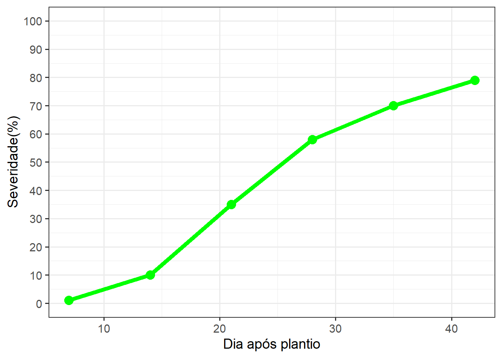

install.packages("ggplot2")
install.packages("tidyverse")Pacotes
O Que São Pacotes do R?
Pacotes do R são coleções de funções, dados e códigos que expandem as funcionalidades básicas da linguagem R. Pense neles como módulos ou bibliotecas que adicionam recursos especializados ao R para tarefas específicas.
Como instalar os pacotes?
Você pode instalar pacotes de diferentes maneiras no R.
Pelo CRAN - Com o código neste modelo
Também é possivel fazer a instalação usando pacotes do GitHub, que ainda não estão disponíveis no R ou na versão que você tenha.
install.packages("remote")
library(remotes) # Carrega o pacote remotes
#Exemplo: O pacote 'ggtext' que adiciona formatação de texto no ggplot2
remotes::install_github("wilkelab/ggtext")Agora que sabe instalar pacotes, você deve lembrar sempre que for usar um pacote deve chamar ele, usando o seguinte código
library(ggplot2)Exemplos de pacotes e usos
Dois pacotes que serão bastante usando neste material são os pacotes ggplot e tidyverse. O ggplot é utilizado para criação de gráficos, já o tidyverse tem dentro diferentes funções e pacotes.
# Carrega o pacote 'tidyverse', que inclui funções para manipulação de dados (dplyr) e visualização (ggplot2)
library(tidyverse)
# Criação dos vetores 'dates' e 'severity' com valores específicos
dates <- c(7, 14, 21, 28, 35, 42) # Dias após o plantio
severity <- c(0.1, 5, 10, 35, 50, 60) # Severidade em porcentagem
# Criação de um data frame com as variáveis 'dates' e 'severity'
data_curva <- data.frame(dates, severity)
data_curva # Exibe o data frame para visualização dates severity
1 7 0.1
2 14 5.0
3 21 10.0
4 28 35.0
5 35 50.0
6 42 60.0# Modifica o data frame para adicionar uma nova coluna 'severity2'
# A função 'mutate' cria a nova coluna com os valores especificados
data_curva |>
mutate(severity2 = c(1, 10, 35, 58, 70, 79)) |> # Adiciona 'severity2' ao data frame
ggplot(aes(dates, severity2)) + # Inicia o gráfico com as variáveis 'dates' e 'severity2'
# Adiciona os pontos ao gráfico
# 'geom_point()' cria os pontos e personaliza sua cor e tamanho
geom_point(color = "green", size = 4) + # Pontos verdes com tamanho 4
# Adiciona a linha conectando os pontos
# 'geom_line()' desenha a linha, e 'linewidth' controla a espessura da linha
geom_line(linewidth = 2, color = "green") + # Linha verde com espessura 2
# Define o tema do gráfico como 'theme_bw' (preto e branco) e ajusta o tamanho da fonte base
theme_bw(base_size = 14) + # Tema preto e branco com fonte tamanho 14
# Adiciona os rótulos aos eixos X e Y
# 'labs()' define os títulos dos eixos X e Y
labs(x = "Dia após plantio", y = "Severidade(%)") + # Rótulos para os eixos
# Personaliza o eixo Y para limitar os valores entre 0 e 100 e definir o número de divisões
# 'scale_y_continuous()' define limites e intervalos do eixo Y
scale_y_continuous(limits = c(0, 100), n.breaks = 10) # Limita o eixo Y entre 0 e 100, com 10 divisões
Legenda:
<- é o operador de atribuição. Ele é utilizado para atribuir valores a variáveis.
|> é para adicionar uma função - como se fosse um adicionar mais algo. Tamém pode utilizar ctrl + shift + M para ter a mesma função.
# usamos sempre que queremos adicionar alguma informação que queremos que o R não leia.